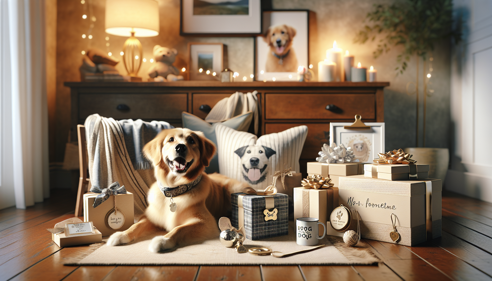

Finding the perfect gift for a dog lover can feel surprisingly tricky. You want something meaningful, useful, and memorable—but you also want to stay on budget. The good news? There are so many adorable, creative, and genuinely thoughtful personalized dog gifts under $50 that make a big impression without a big price tag.
Whether you are shopping for a pet parent, celebrating a new puppy, looking for a holiday surprise, or simply treating your own four-legged best friend, personalized gifts add that extra-special touch. A custom item shows that you took the time to think about the dog, their personality, and the bond they share with their human. That is what transforms an ordinary present into a keepsake.
In this guide, we are sharing some of the best personalized dog gifts under $50, along with tips on what makes a gift feel personal, practical, and worth buying. If you love affordable pet products with heart, you are in the right place.
Dog people are passionate about their pets—and for good reason. Dogs are family. That is why gifts featuring a dog’s name, likeness, or unique personality often feel far more meaningful than generic pet products. Personalization turns a cute item into something one-of-a-kind.
For example, a simple dog bandana becomes extra charming when it includes the pup’s name. A mug becomes more treasured when it features a custom illustration of a beloved pet. Even practical items like tags or bowls can feel elevated when they are made specifically for one dog.
Another reason personalized gifts work so well is that they fit a wide range of occasions. They are great for:
Best of all, you do not have to spend a fortune to give something heartfelt. Many of the best custom dog gifts are available at surprisingly affordable prices.
One of the most popular personalized dog gifts under $50 is a custom dog bandana. It is easy to see why. Bandanas are fun, wearable, photo-friendly, and practical for everyday style or special occasions. They can be customized with a dog’s name, a cute phrase, seasonal themes, or even breed-specific designs.
A personalized bandana is especially great if you want a gift that feels festive and useful. Dogs can wear them for birthday parties, family photos, holiday gatherings, walks around the neighborhood, or casual days at home when being adorable is the main job.
When shopping for a custom bandana, look for:
This type of gift is perfect for pet owners who love sharing photos of their dog online or dressing them up for celebrations. It feels personal without being overly formal, and it usually fits comfortably within a modest budget.
If you want a personalized gift that is both thoughtful and practical, engraved dog tags are a fantastic choice. They may be small, but they do a big job. A customized tag can include the dog’s name, contact information, and sometimes even a fun message or design element.
These gifts are ideal because they blend personal style with everyday usefulness. A dog owner will appreciate receiving something that helps keep their pet safe while also looking polished and unique.
There are many styles available under $50, including:
You can also pair an engraved tag with a new collar for a more complete gift set while still staying budget-conscious. For anyone shopping for a new dog owner, this is one of the smartest and most appreciated personalized presents available.
Not every dog gift has to be for the dog alone. Some of the best personalized dog gifts under $50 are actually designed for the humans who adore them. Personalized pet mugs are a classic example. They are affordable, charming, and easy to customize with a dog’s name, breed, portrait, or illustration.
A custom mug is the kind of gift that becomes part of someone’s daily routine. Every morning coffee or evening tea becomes a little sweeter when their dog’s face is smiling back at them. It is practical, sentimental, and easy to enjoy year-round.
These mugs work especially well for:
If you want to make the gift feel even more complete, you can pair the mug with gourmet coffee, tea, or a small treat for the dog. It creates a cozy, thoughtful package without stretching your budget.
For gift shoppers who want something sentimental, personalized pet ornaments and keepsakes are always a winning idea. These are especially popular around the holidays, but they are lovely any time of year. A custom ornament featuring a dog’s name or image can become a treasured tradition that comes out year after year.
Keepsakes are also a beautiful option for commemorating milestones like a first Christmas, adoption anniversary, or new puppy arrival. Some can even serve as gentle memorial gifts for someone remembering a beloved companion.
Popular personalized keepsake ideas include:
Because these items tend to be compact and decorative, many fall comfortably under the $50 mark. They feel intimate and memorable, which makes them ideal for close friends, family members, and devoted pet parents.
If you love gifts that blend style and practicality, personalized feeding accessories are worth considering. Think custom dog bowls, feeding mats, treat jars, or storage containers labeled with the dog’s name. These gifts are useful every single day, which makes them especially valuable for pet owners.
What makes feeding accessories so appealing is that they help elevate everyday routines. Instead of a plain bowl or container, the pet owner gets something that feels tailored to their dog and home. It is a small luxury that adds personality to a space.
When choosing personalized feeding accessories, keep an eye out for:
These products also make excellent gifts for new puppy parents who are still building their pet essentials collection. A personalized treat jar or bowl can make a practical starter gift feel much more special.
Some of the best personalized dog gifts are designed to celebrate the dog as part of the family home. Custom home decor can include name signs, pet portrait prints, welcome signs, leash holders, or small decorative pieces that reflect a dog-loving household.
This type of gift works well because it goes beyond utility. It helps people show off their love for their dog in a stylish, personal way. Many pet owners enjoy decorating with items that reflect their dog’s place in the family, especially if the design is tasteful and easy to display.
Affordable custom decor under $50 often includes:
When selecting decor, think about the recipient’s style. Do they like modern minimalism, rustic farmhouse, playful color, or classic neutrals? Matching the gift to their home aesthetic makes it feel even more intentional.
With so many options available, how do you pick the right one? The best gift usually comes down to the dog’s lifestyle and the owner’s personality. A highly active dog may appreciate something wearable or practical, while a sentimental pet parent may love keepsakes or custom art. A stylish dog owner might prefer decor or coordinated accessories.
Here are a few easy questions to ask before buying:
It is also smart to double-check personalization details before ordering. Names, dates, colors, and sizing matter. A thoughtful gift feels even better when every detail is right.
Finally, remember that presentation counts. Even an affordable personalized gift can feel premium when it is wrapped nicely and given with care. Add a handwritten note, include the dog’s favorite treats, or pair two small items together for a memorable gift bundle.
You do not need an unlimited budget to find a gift that makes a dog lover smile. The best personalized dog gifts under $50 prove that thoughtful, custom touches can be both affordable and meaningful. From custom bandanas and engraved tags to mugs, keepsakes, feeding accessories, and home decor, there are plenty of ways to celebrate the bond between dogs and their people without overspending.
The secret is choosing something that feels personal to the recipient—something that reflects the dog’s identity, the owner’s love, or the joy they share together. That is what makes a gift unforgettable.
If you are ready to find a gift that is cute, custom, and full of heart, shop personalized pet products at SnoutAndAbout on Etsy.